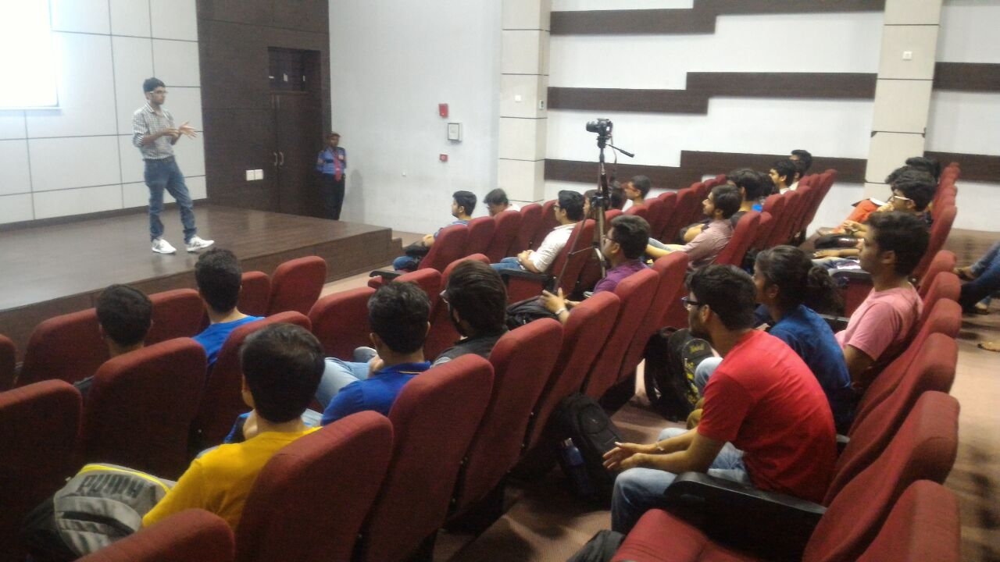

Meet the Community Folks
Where the awesomeness begins...
Success Stories
FOSSWave at IIT,Indore
After a fruitful brainstorming on open source communities, we followed with a session on web development. Kanika Murarka delivered the session explaining the role of browsers, what their purposes are, and how they work. She then explained the basics of web technologies like HTML5, CSS, and JavaScript. Since most of the students were in their first year of classes, we also gave demos and hands-on workshops.

FOSSWave at NIEC,Delhi
Open source is the new trend. When major corporations are moving towards open architecture by using open source tools and even pushing their internal projects into open source, it makes your contributions especially worthy. But before starting with contributing, many people face the same common set of questions. How they can start, how should they introduce themselves in the community, and where they can contribute. To answer these questions, I planned a session on free and open source software (FOSS) and Fedora at the Northern India Engineering College in Delhi, India.
Kanika Murarka
Fedora Contributor - Red Hatter - Design Specilist
Devyani Kota
Fedora Contributor - Red Hatter - Pythonista - Ansible
Saurabh Badhwar
Fedora Contributor - Red Hatter - Perf&Scale - Community Builder
Prakash Mishra
Fedora Contributor - Quality Assurance - Community Builder
Vipul Siddharth
Fedora Contributor - Quality Assurance - Community Builder
Sumantro Mukherjee
Fedora Ambassdor - Mozilla Rep. - IoT - Virtual Reality
Buvanesh Kumar
Fedora Contributor - Virtualization - Automation
Ankit Raj
Red Hatter - Storage - Ruby - Machine Learning